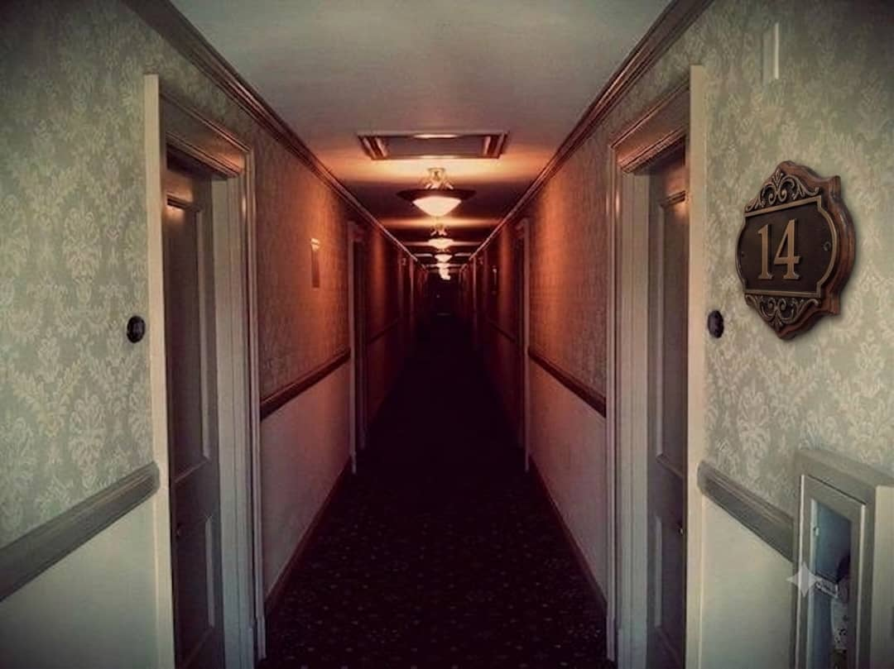

I've been meaning to write this for a long time and I never did because I couldn't figure out how to explain it without sounding like I was making things up. I still can't, so I'm just going to say what happened.
When I was about 12, maybe 1999, my father had a work trip in Kuala Kangsar. We went with him because it was school holidays. My mum, my younger sister Hana, and me. We stayed three nights at a place called Hotel Mutiara Lama. Old colonial-style building, used to be a rest house from the British era I think. It was already not doing well, not many guests. The staff kept to themselves.
The first night was normal. A bit quiet, that particular kind of heavy silence that old buildings have. Our room was on the second floor, end of the corridor. Room 14.

The second night my sister woke up at around 2 or 3 in the morning. She was sitting up in bed and just looking at the corner of the room. Not crying, not saying anything. Just looking. When I asked her what she was doing she didn't answer. When I turned on the lamp she blinked and said she'd been dreaming. She was 9 at the time. She went back to sleep.
I couldn't sleep after that. I lay there for a while and then I started noticing the smell. Hard to describe. Like old paper and something else underneath it that I couldn't name. It came and went. I eventually fell asleep.
The third night was worse. My father came back to the room late, he'd been out with his colleagues. My mum and sister were already asleep. I was awake reading. My father looked pale when he came in. I asked if he was alright and he said yes, just tired. But he didn't sleep. I could hear him turning over until I fell asleep myself.
In the morning I overheard him telling my mother something quietly in the bathroom. I couldn't make out the words. When I asked about it at breakfast he said he'd just had a strange dream. He looked the same way Hana had looked the night before. Not quite there.
We checked out that morning. We were supposed to stay one more night. My father said he had to get back early for work. My mother didn't ask questions.
I never found out what he heard or saw. He died in 2003 and I never asked him directly. I don't know if I was afraid of the answer or afraid there wasn't one.
I found a reference to this hotel in one of the archived pages here which is why I'm posting. Has anyone else stayed there? Or know anything about the building's history?